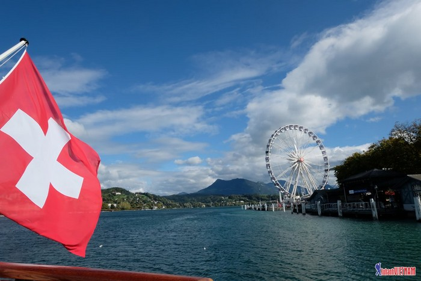
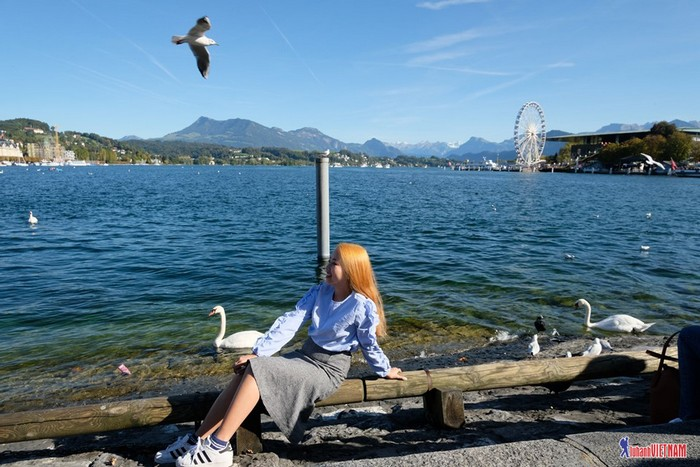
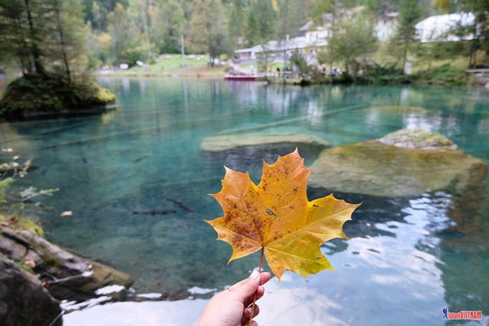
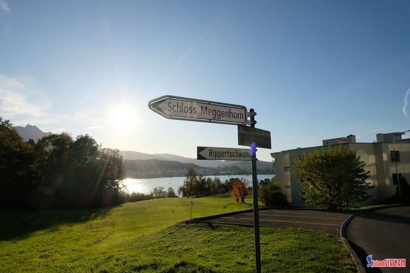
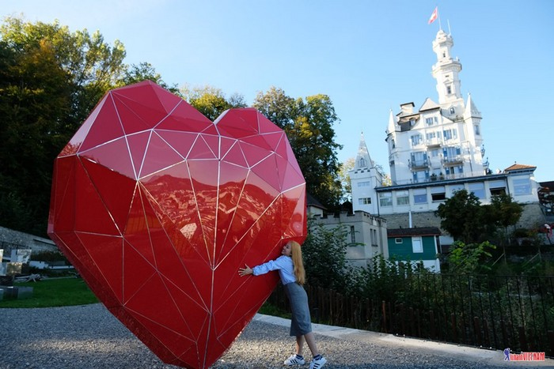
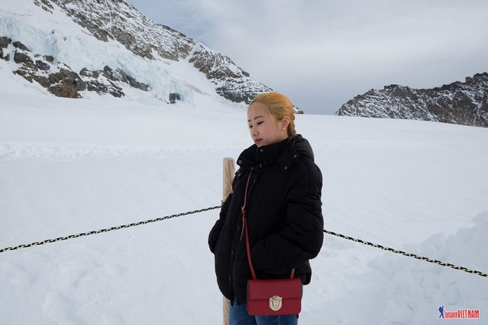

ZURICH-Thuy Si
REVIEW DU LỊCH THỤY SĨ 4N3Đ CỦA CÔ GÁI VIỆT
Dưới đây là một số bức ảnh được chụp tại Thụy Sĩ

Thuyền đi trên hồ Luzern đến chân núi Rigi

Lake Luzern Switzerland.

Hồ Blausee

Bảng chỉ đưởng tới Schloss Meggenhorn

Lâu đài Gutsch

Chơi trượt tuyết
Trang 7